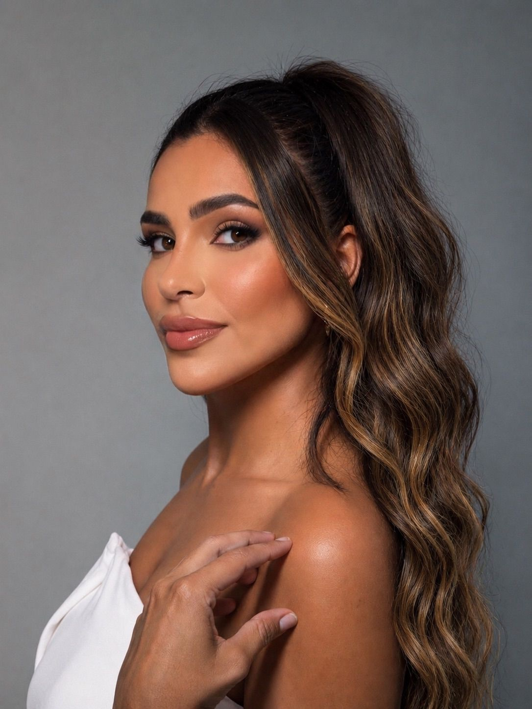
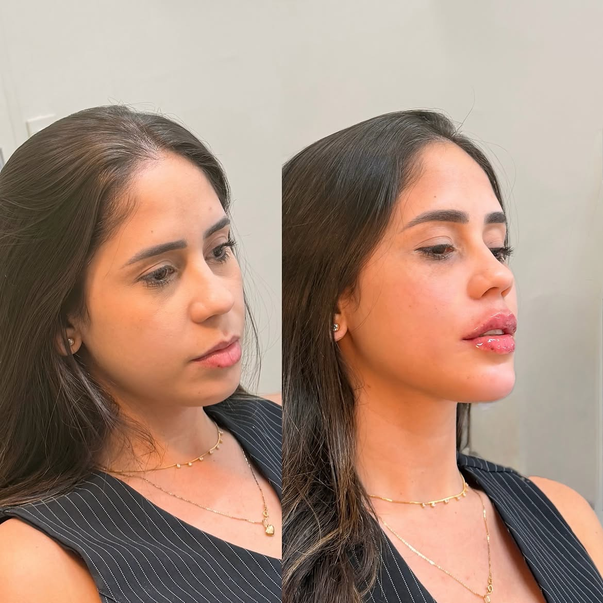
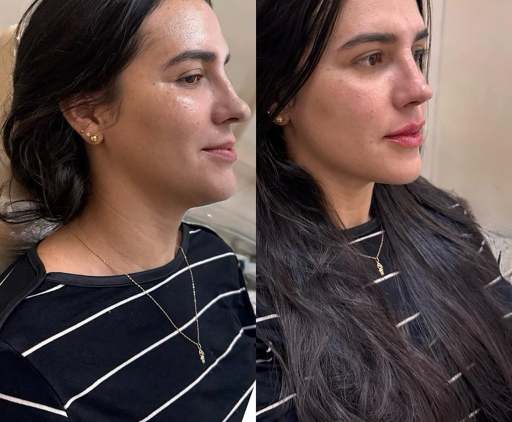
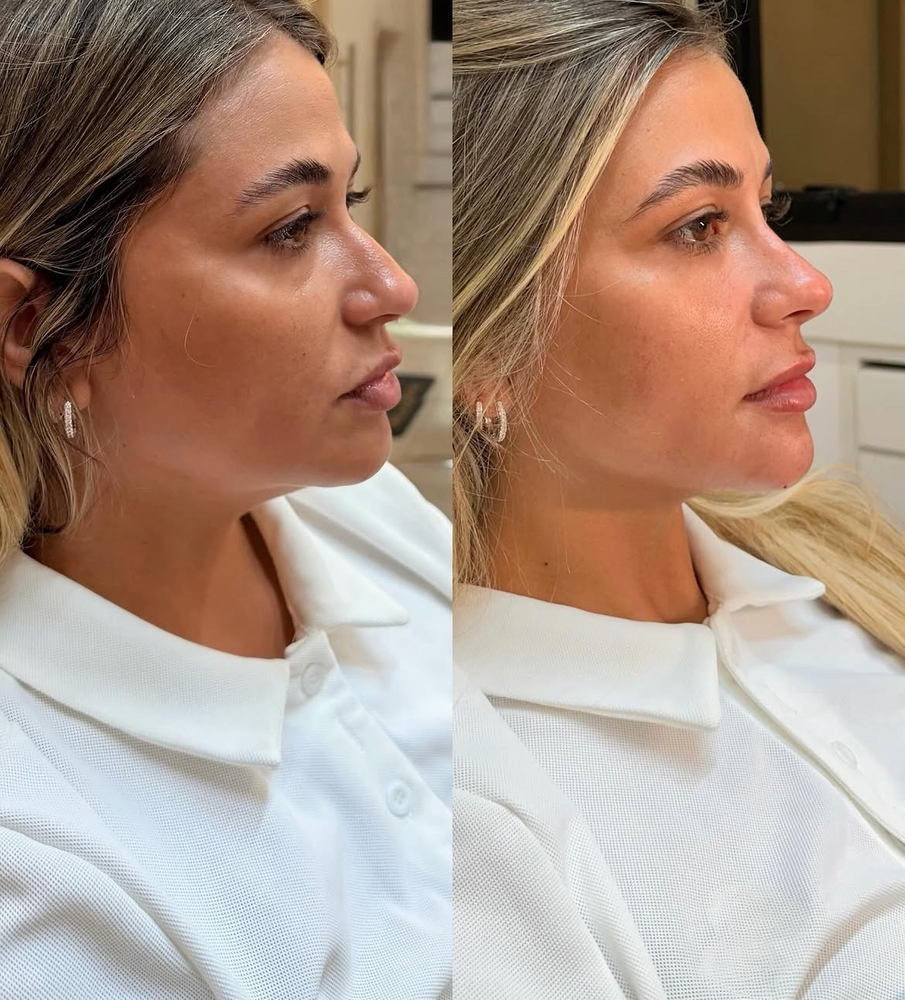
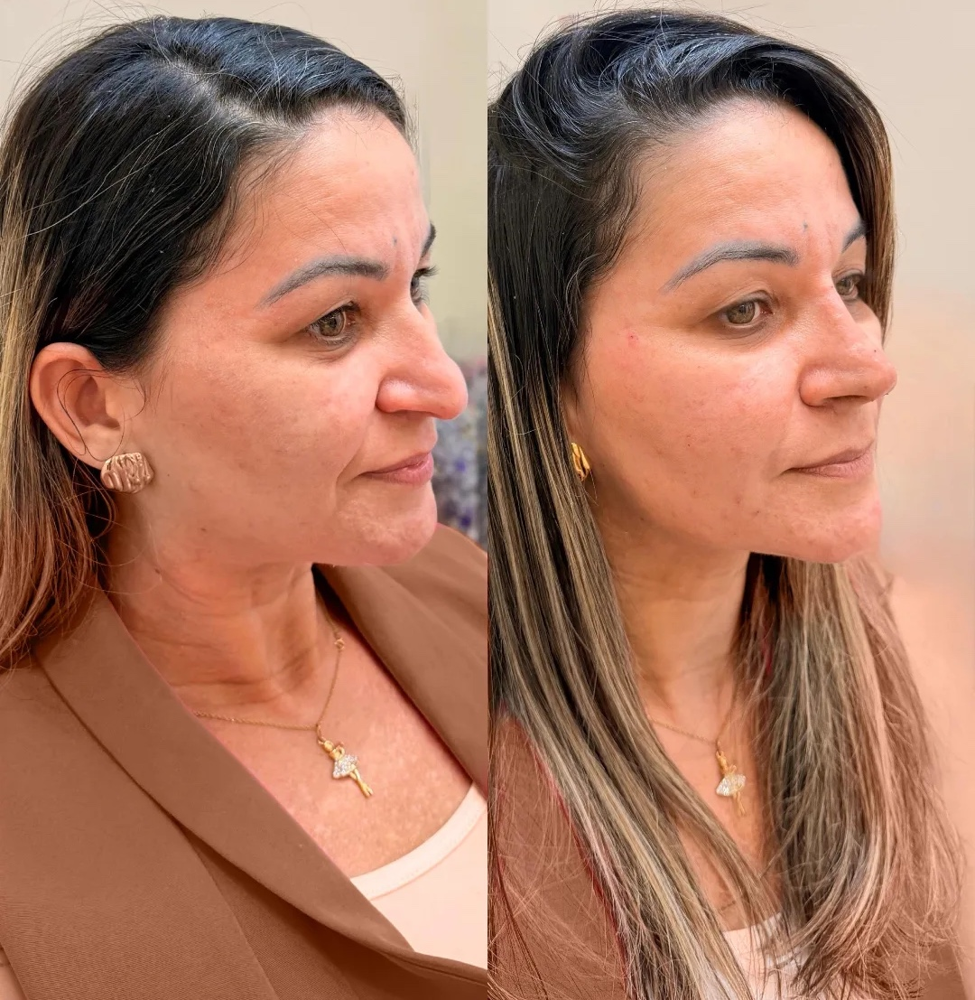
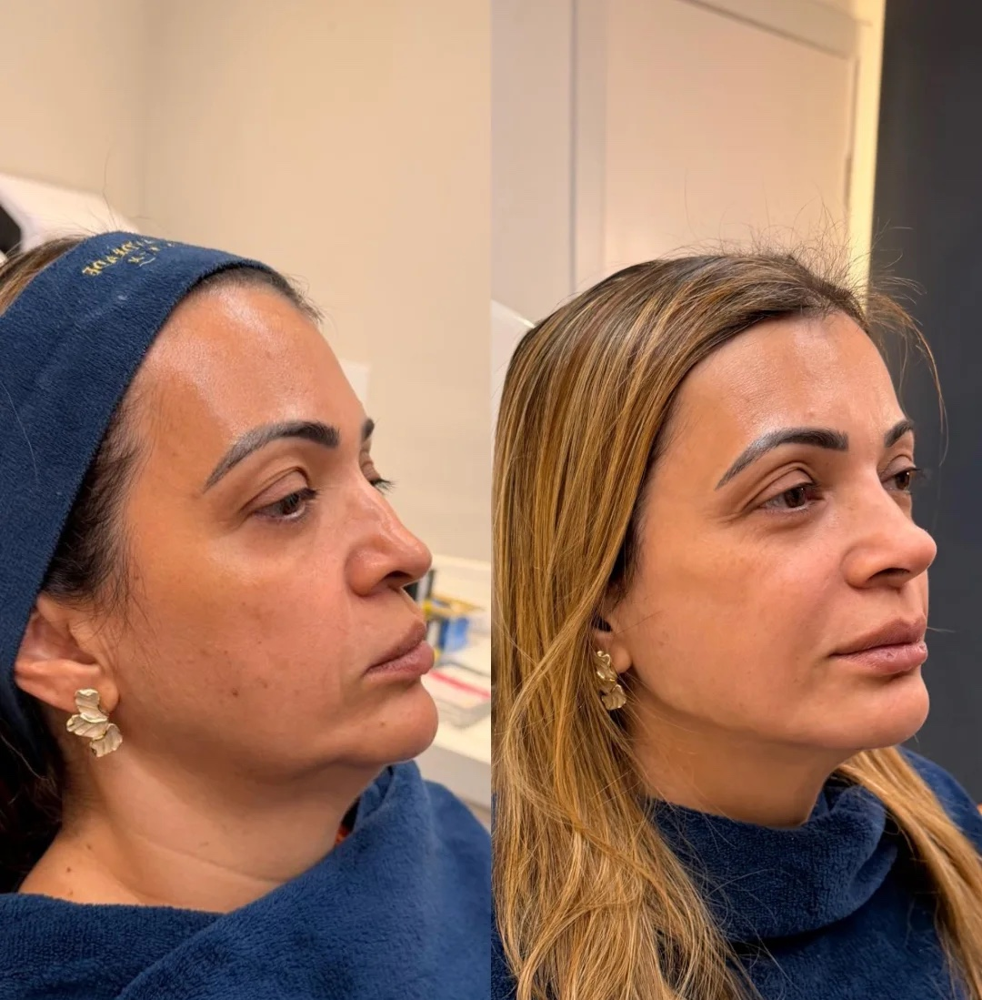
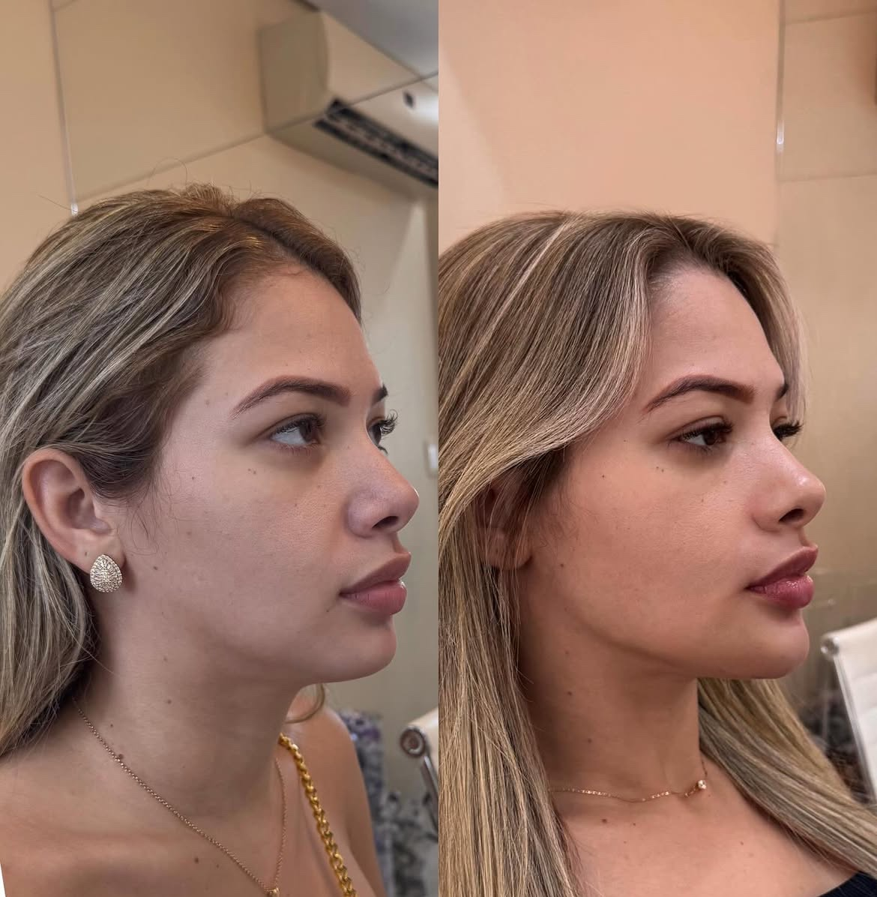
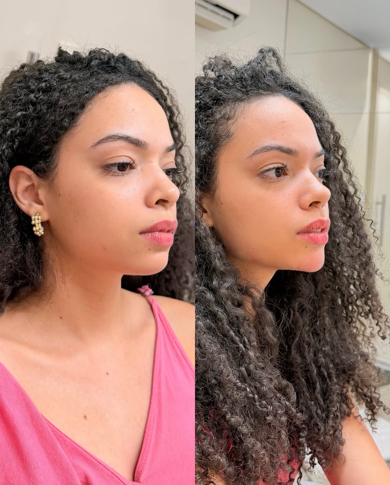
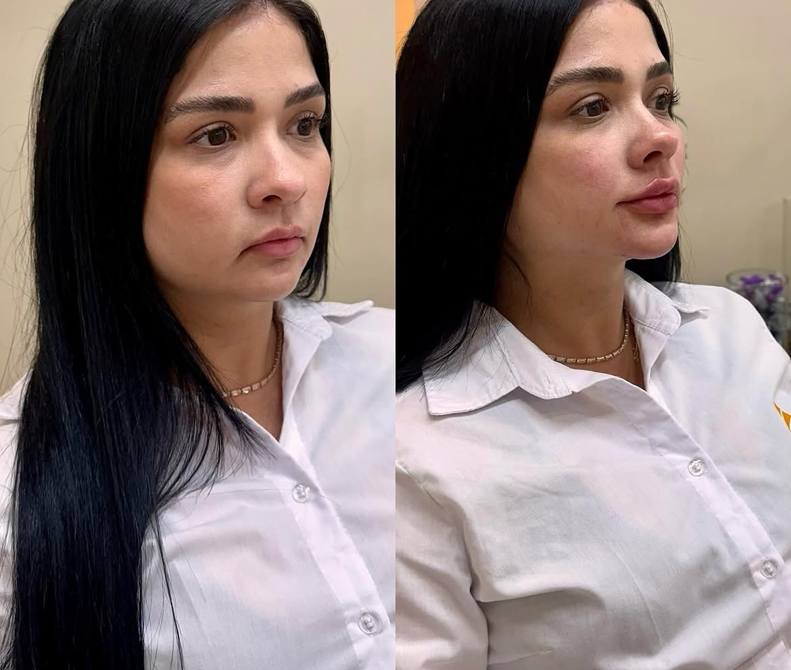
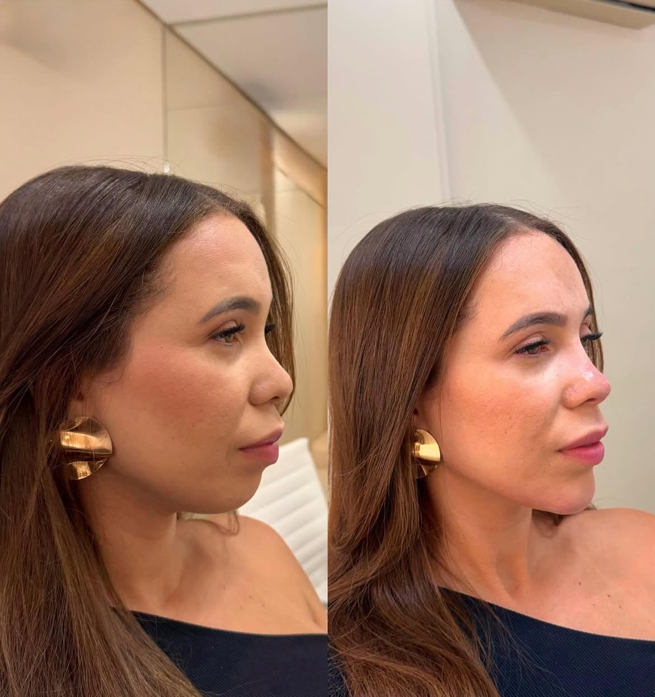

Naturalidade
Preservar seus traços e aquilo que faz você ser você.

Harmonização facial planejada para valorizar seus traços, respeitar suas proporções e entregar um resultado natural.
Sem exageros e sem transformar sua identidade.
Cada rosto carrega uma história, e nada aqui é apagado. O que existe é organizado, sustentado e devolvido em equilíbrio.
Seu rosto não precisa parecer diferente. Precisa fazer mais sentido para você.
Antes de decidir
Talvez você já tenha pensado em fazer um procedimento, mas desistiu por medo de:
E esse receio faz sentido.
Uma boa harmonização não começa escolhendo o que aplicar. Começa entendendo o seu rosto.
Preservar seus traços e aquilo que faz você ser você.
Entender proporções, estruturas e necessidades antes de qualquer procedimento.
Buscar um resultado sutil, equilibrado e sofisticado.
Menos excesso. Mais precisão.Menos padrão. Mais identidade.
Método Leitura Facial
A diferença não está apenas na técnica. Está em saber onde mexer, onde não mexer e qual é o momento certo para cada decisão.
Analisamos proporções, estruturas, assimetrias, sustentação, pele e características individuais.
Definimos o que realmente faz sentido para você — inclusive aquilo que não precisa ser feito.
Só então escolhemos as técnicas e procedimentos necessários para construir o resultado.
Sua avaliação acontece em 4 etapas:
O objetivo não é preencher um rosto.É construir equilíbrio.
Resultados
Cada rosto possui uma necessidade diferente. Por isso, os resultados não seguem uma fórmula pronta: são planejados para melhorar proporção, contorno, sustentação e equilíbrio, preservando a identidade de cada paciente.









Registros feitos em consultório, sem edição de traço ou retoque de contorno. Resultados individuais: cada rosto responde de forma diferente conforme anatomia, qualidade de pele, idade e histórico de procedimentos. Imagens publicadas com autorização por escrito das pacientes.
Protocolo
Um perfil mais equilibrado começa pela relação entre as estruturas.
Trabalhamos projeção, alinhamento e proporção entre nariz, lábios e mento para criar um perfil mais harmônico.
Protocolo
Mais sustentação. Menos peso.
Uma estratégia para recuperar estrutura, definição e equilíbrio do rosto, respeitando as características individuais e a evolução natural.
Procedimentos
Não existe um procedimento universal para todos os rostos. Cada técnica possui uma função dentro de uma estratégia maior.
Suavização de linhas e equilíbrio da ação muscular.
Estrutura, projeção, definição e equilíbrio.
Estímulo de colágeno, firmeza e qualidade da pele.
Auxílio no reposicionamento e definição do contorno.
Recursos para firmeza, qualidade da pele e estímulo de colágeno.
Hidratação, textura, viço e qualidade cutânea.
O procedimento não é definido antes da avaliação.O rosto vem primeiro.
Thainan Matos

Foi a partir dessa visão que construí minha forma de trabalhar com harmonização facial.
Ao longo da minha trajetória, percebi que muitas pacientes chegavam buscando corrigir uma região específica do rosto, quando, na verdade, o que incomodava estava na relação entre diferentes estruturas.
Foi então que passei a olhar para o rosto de forma integrada. Não apenas para aquilo que precisa ser preenchido, mas para aquilo que precisa ser equilibrado.
Hoje, cada avaliação começa com uma pergunta:
“O que faz você sentir que deixou de se reconhecer?”
A partir dessa resposta, construímos uma estratégia individualizada, respeitando seus traços, sua anatomia e aquilo que você deseja preservar.
Depoimentos


“Você está diferente.”
“Está mais bonita.”
“Parece que descansou.”
Um resultado que melhora sua aparênciasem apagar quem você é.
Dúvidas frequentes
A proposta é justamente o contrário. O planejamento considera suas proporções e características individuais para buscar um resultado equilibrado e natural.
Não necessariamente. A indicação depende da avaliação. O objetivo é fazer apenas aquilo que realmente contribui para o resultado.
Sim. O rosto é analisado como um todo para definir a melhor estratégia para sua necessidade.
A indicação acontece após uma avaliação individualizada. Não existe protocolo padrão para todos os rostos.
Primeiro passo
Talvez só queira voltar a gostar do rosto que vê no espelho.
A avaliação é o primeiro passo para entender o que realmente pode ser melhorado — com naturalidade, estratégia e respeito à sua identidade.
Seu rosto. Seus traços. Uma estratégia pensada para você.